Knobs
| Qty | Size (inches) | Size (metric) | Description | Used for: | Picture
| 4 | 1/4" | M6 | Threaded pastic knob | Template attachment(2) | Alignment rail hold (2) Could substitute wingnuts (cheaper). 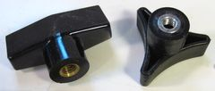
| 3 | 5/16" | M8 | Threaded pastic knob | Plunge depth stops lock (2), | fence lock(1) Machine screws and nuts
| Qty | Size (inches) | Size (metric) | Description | Used for: | Picture
| 2 | 5/16 x 2" | M8 x 50 mm | carriage bolt | Deph stops lock | 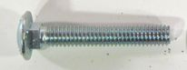
| 1 | 5/16 x 2.5" | M8 x 60 mm | carriage bolt | Fence holddown
| 1 | 5/16 x 1.25" | M8 x 30 mm | hex bolt | Plunge back stop pin
| 1 | 3/8" x 5" | M10 x 120mm | carriage bolt | Holddown attachment | 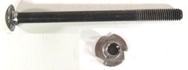
| 1 | 3/8" | M10 | T-nut | For holddown clamp
| 16 | #8-32 x 3/4" | M4 x 18 mm | Machine screws | with countersink head To attach drawer slides
| 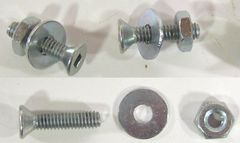
| 16 | #8-32 | M4 | Nut | To attach drawer slides with
|
| 6 | 1/4" x 3 1/8" | M6 x 80 mm | knock down screw | Template holders (2) | Alignment rail holders (2) handle knob attach (1), plunge lever elbow (1) 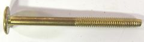
| Washers
| Qty | Size (inches) | Size (metric) | Description | Used for: | Picture
| 6 | 1 1/4" | w. 5/16" hole. 32 mm | w. 8 mm hole Washer | Template mount (2), depth stops (2), | alignment rail holder(2) 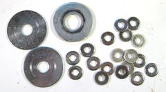
| 2 | 1 1/4" | w. 3/8" or lager hole. 32 mm | w. 8 mm hole Washer | Mount holddown clamp (1) | Fence holddown (1) 36 | 3/4" | w. 1/4" hole 18 mm | w. 6 mm hole Washer |
For mounting drawer slides (16) | Spacers inside pantograph (10) Plunge lever mount spacers (4) Bearing support spacers (6) Wood screws
| Qty | Size (inches) | Size (metric) | Description | Used for: | Picture
| 46 | 2" | 50 mm | drywall screws |
Table attachment (12) | Pantograph mount attach(14) Bearing mount attach (2) Attach spring cam to short link (2) Template frame attachment (8) Plunge lever parts (4) Hold spring cam extension on long link (4) 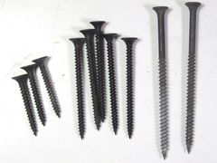
| 7 | 1.25" | 30 mm | drywall screws |
Hold springs (2) | Hold dust covers (5) 2 | 3" | 75 mm | drywall screw |
Hold plunge lever support (2) | 2 | 2" #10 | 50 mm | #10 countersink wood screw |
Plunge lever link mount (1) | Hold bearing (1) 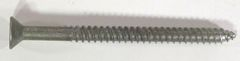
| Miscellaneous
| Qty | Size (inches) | Size (metric) | Description | Used for:
| 1 | 3/16" | 5 mm x 75 mm long | steel shaft | Mount for rear spring cam | 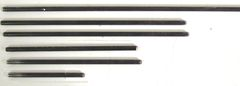
| 1 | 3/16" | 5 mm x 225 mm long | steel shaft | Pantograph mount
| 2 | 3/16" | 5 mm x 115 mm long | steel shaft | Both shafts through operating lever
| 2 | 3/16" | 5 mm x 152 mm long | steel shaft | Router mount / short link connection | Also pivot for plunge lever. 2 | 3/32 x 1/2" | 2 mm x 15 mm long | coathanger wire | Short piece of coathanger wire
| You could also use a piece of toothpick. 2 | 4 3/4" | 12 cm | Tension springs made of 2.0 mm thick | wire. Coil outside diamter is 19 mm, coiled part is 80 mm long unstretched. I got mine from Lowes.
To counteract weight of router | Lowes (US and Canada) has a good selection of springs, including this size. 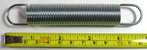
| 2 | 8" | 20 cm | Length of string | To attach springs to spring cams | 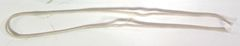
| 1 | 2" | 50 mm | C-clamp | Cut up to make holddown clamp
| 2 | 16". | 40 cm | Modified Full extension double | tiered drawer slides. You can also use keyboard slides or center drawer slides (from Lowes). For plunge mechanism. | 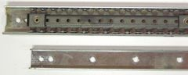
| 1 | 1/2" o.d. | | Ball bearing | To use with 1/4" router bit | 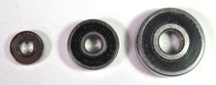
| 1 | 3/4" o.d. | | Ball bearing | To use with 3/8" router bit
| 1 | 1" o.d. | | Ball bearing | To use with 1/2" router bit
| | ||||||||||||||||||||||||
|---|---|---|---|---|---|---|---|---|---|---|---|---|---|---|---|---|---|---|---|---|---|---|---|---|---|---|---|---|---|---|---|---|---|---|---|---|---|---|---|---|---|---|---|---|---|---|---|---|---|---|---|---|---|---|---|---|---|---|---|---|---|---|---|---|---|---|---|---|---|---|---|---|---|---|---|---|---|---|---|---|---|---|---|---|---|---|---|---|---|---|---|---|---|---|---|---|---|---|---|---|---|---|---|---|---|---|---|---|---|---|---|---|---|---|---|---|---|---|---|---|---|---|---|---|---|---|---|---|---|---|---|---|---|---|---|---|---|---|---|---|---|---|---|---|---|---|---|---|---|---|---|---|---|---|---|---|---|---|---|---|---|---|---|---|---|---|---|---|---|---|---|---|---|---|---|---|---|---|---|---|---|---|---|---|---|---|---|---|---|---|---|---|---|---|---|---|---|---|---|---|---|---|---|---|---|---|---|---|---|---|---|---|---|---|---|---|
Notes: